Introduction to Optimization
CO 250
Lecture 19
PDF version of these slides (demo: this PDF version is experimental and may contain errors or differ from the slides)
Lecture Outline
- Review: The Primal-Dual Algorithm
- Solving Integer Programs
Review: The Primal-Dual Algorithm
The Primal-Dual Algorithm
The matching problem can be expressed as a linear program. This is the primal.
\[ \begin{aligned} \text{(P)}\quad \min\quad & \sum_{e \in E} c_e x_e \\ \text{s.t.}\quad & \sum_{e \in E : v \in e} x_e = 1 \quad (v \in V) \\ & x_e \ge 0 \quad (e \in E) \end{aligned} \]
This is the dual.
\[ \begin{aligned} \text{(D)}\quad \max\quad & \sum_{v \in V} y_v \\ \text{s.t.}\quad & y_u + y_v \le c_e \quad (e = uv \in E) \\ \end{aligned} \]
The Primal-Dual Algorithm
The reduced cost of an edge $e = uv$ associated to a dual feasible $y$ is $c_{e}' = c_e - y_u - y_v$. The constraints say that these reduced costs are all nonnegative.
An edge is an equality edge for a dual feasible $y$ if the reduced cost $c_e' = 0$, i.e. the constraint $c_e \ge y_u + y_v$ holds with equality.
For bipartite graphs, complementary slackness says that the dual solution is optimal if and only if there is a perfect matching consisting of only equality edges.
The Primal-Dual Algorithm
A bipartite graph has its vertices divided into two sets $V_1$ and $V_2$.
We will be looking for deficient sets (where we only consider equality edges in the graph). For an edge set $E^=$, the neighborhood of a set $S$ is the set \[ \mathcal{N}_{E^=}(S) = \{v \in V : \text{There is some }u \in S, \text{ s.t. } uv \in E^=\}. \]
A set of vertices $S \subseteq V_1$ or $S \subseteq V_2$ is a deficient set for the edge set $E^=$ if $|\mathcal{N}_{E^=}(S)| < |S|$.
Hall's Theorem
Suppose that $G$ is a bipartite graph. The graph $G$ has no perfect matching if and only if there exists some deficient set of vertices.
The Primal-Dual Algorithm
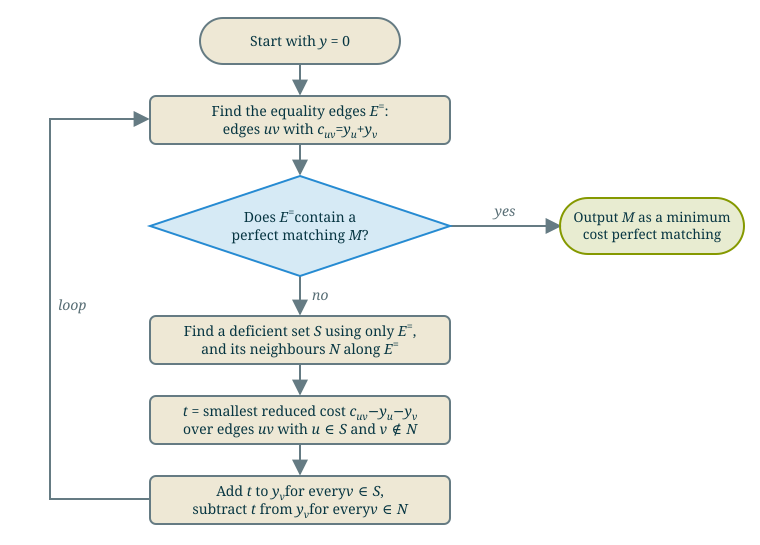
The Primal-Dual Algorithm
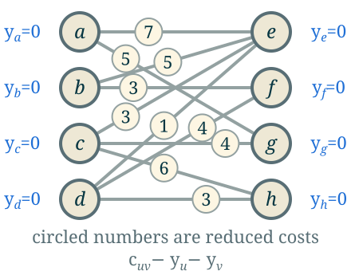
\[E^{=} = \emptyset\]
\[S = \{a\}, \quad \mathcal{N}_{E^=}(S) = \emptyset\]
\[t = \min\{7, 5\} = 5\]
The Primal-Dual Algorithm
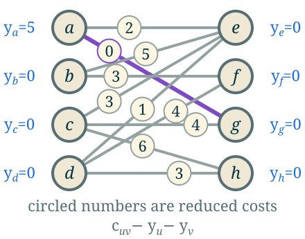
\[E^{=} = \{ag\}\]
\[S = \{b, c, d\}, \quad \mathcal{N}_{E^=}(S) = \emptyset\]
\[t = \min\{5, 3, 3, 4, 6, 1, 4, 3\} = 1\]
The Primal-Dual Algorithm
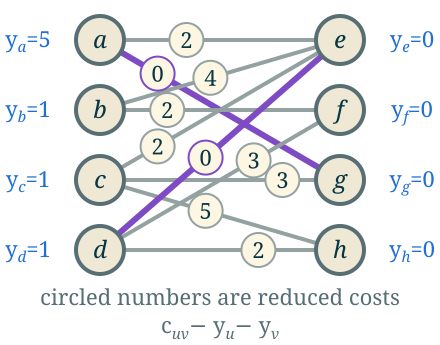
\[E^{=} = \{ag, de\}\]
\[S = \{b, c\}, \quad \mathcal{N}_{E^=}(S) = \emptyset\]
\[t = \min\{4, 2, 2, 3, 5\} = 2\]
The Primal-Dual Algorithm
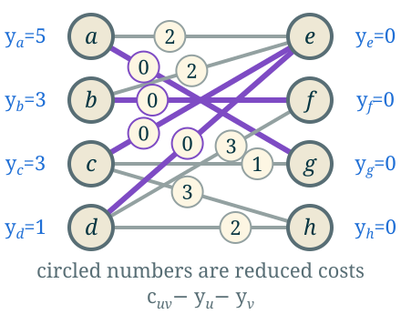
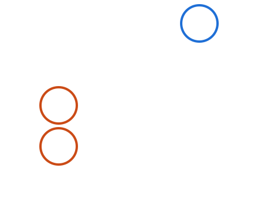
\[E^{=} = \{ag, bf, ce, de\}\]
\[S = \{c, d\}, \quad \mathcal{N}_{E^=}(S) = \{e\}\]
\[t = \min\{1, 3, 3, 2\} = 1\]
The Primal-Dual Algorithm
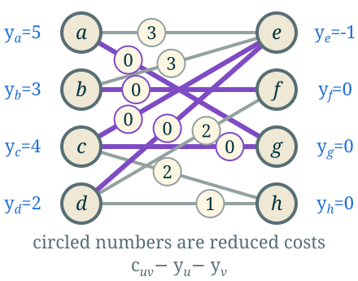
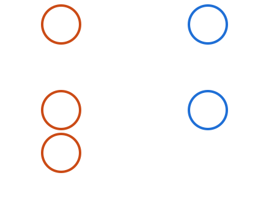
\[E^{=} = \{ag, bf, ce, cg, de\}\]
\[S = \{a, c, d\}, \quad \mathcal{N}_{E^=}(S) = \{e, g\}\]
\[t = \min\{2, 2, 1\} = 1\]
The Primal-Dual Algorithm
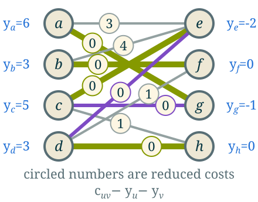
\[E^{=} = \{ag, bf, ce, cg, de, dh\}\]
\[M = \{ag, bf, ce, dh\}\]
\[\begin{aligned} c(M) &= 5 + 3 + 3 + 3 = 14 \\ \sum_{w} y_w &= 14 \end{aligned}\]
The Primal-Dual Algorithm
Some notes: finding a perfect matching for a large graph is its own computer science problem. For small graphs, a simple case division will suffice: pick an edge, and either include it or exclude it.
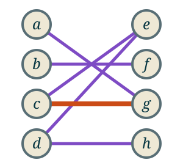
Pick the edge $cg$
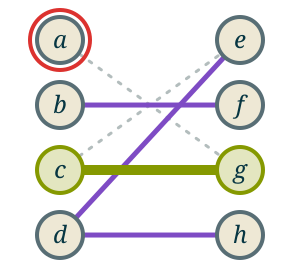
Include $cg$: this is the same as deleting the vertices $c$ and $g$ from the graph and looking for a perfect matching.
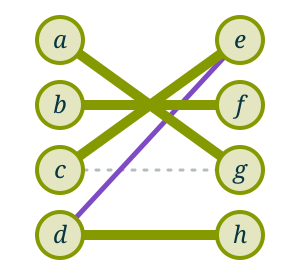
Exclude $cg$: this is like deleting that edge from the graph (but keeping the vertices). $ag,$ $bf,$ $ce$ are forced, and then $dh.$
\[M = \{ag, bf, ce, dh\}\]
The Primal-Dual Algorithm
To find a deficient set in a small graph, try every subset $S$ of one side: list its neighbours $\mathcal{N}_{E^=}(S)$ along the equality edges, and check whether $|\mathcal{N}_{E^=}(S)| < |S|.$
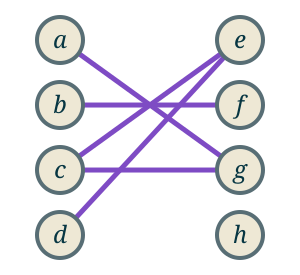
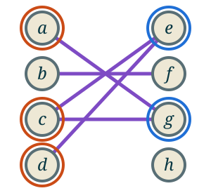
\[E^{=} = \{ag, bf, ce, cg, de\}\]
Size 1: $\mathcal{N}_{E^=}(a) = \{g\},$ $\mathcal{N}_{E^=}(b) = \{f\},$ $\mathcal{N}_{E^=}(c) = \{e, g\},$ $\mathcal{N}_{E^=}(d) = \{e\}.$ None is deficient.
Size 2: every pair has at least two neighbours. None is deficient.
Size 3: $\mathcal{N}_{E^=}(\{a, b, c\}) = \{e, f, g\},$ $\mathcal{N}_{E^=}(\{a, b, d\}) = \{e, f, g\},$ $\mathcal{N}_{E^=}(\{a, c, d\}) = \{e, g\}.$
\[S = \{a, c, d\}, \quad \mathcal{N}_{E^=}(S) = \{e, g\}\]
The Primal-Dual Algorithm
When we update $y$, we always increase the entries associated to the deficient set and decrease the entries associated to their neighbors. How do we decide the size of the update?
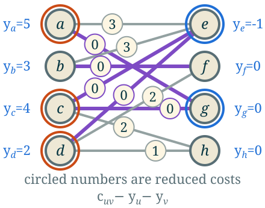
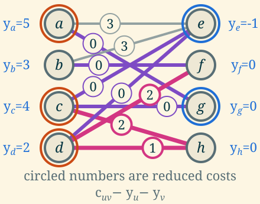
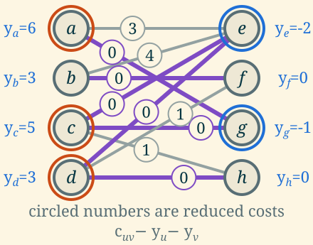
Edges between $S$ and $\mathcal{N}_{E^=}(S)$: one end goes up by $t$ and the other goes down by $t,$ so the reduced cost does not change.
Edges from $S$ to a vertex outside $\mathcal{N}_{E^=}(S)$ (pink): only one end goes up, so the reduced cost drops by $t.$ It has to stay at least $0.$
\[t = \min\{2, 2, 1\} = 1\]
After the update, $dh$ is a new equality edge.
The Primal-Dual Algorithm
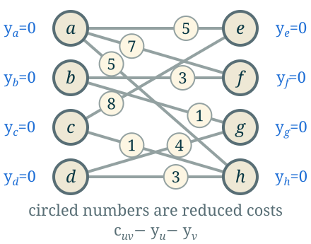
\[E^{=} = \emptyset\]
\[S = \{a\}, \quad \mathcal{N}_{E^=}(S) = \emptyset\]
\[t = \min\{5, 7, 5\} = 5\]
The Primal-Dual Algorithm
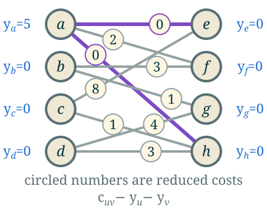
\[E^{=} = \{ae, ah\}\]
\[S = \{b, c\}, \quad \mathcal{N}_{E^=}(S) = \emptyset\]
\[t = \min\{3, 1, 8, 1\} = 1\]
The Primal-Dual Algorithm
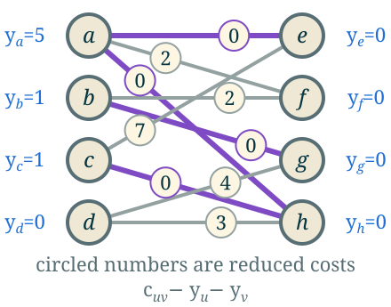
\[E^{=} = \{ae, ah, bg, ch\}\]
\[S = \{d\}, \quad \mathcal{N}_{E^=}(S) = \emptyset\]
\[t = \min\{4, 3\} = 3\]
The Primal-Dual Algorithm
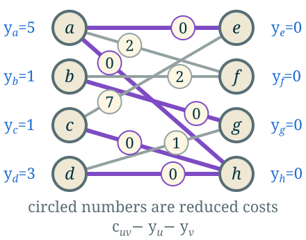
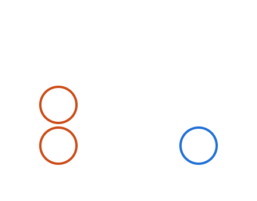
\[E^{=} = \{ae, ah, bg, ch, dh\}\]
\[S = \{c, d\}, \quad \mathcal{N}_{E^=}(S) = \{h\}\]
\[t = \min\{7, 1\} = 1\]
The Primal-Dual Algorithm
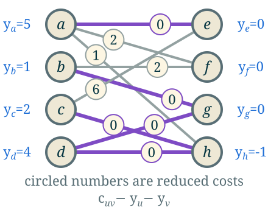
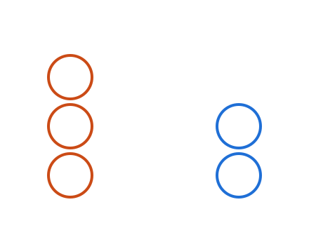
\[E^{=} = \{ae, bg, ch, dg, dh\}\]
\[S = \{b, c, d\}, \quad \mathcal{N}_{E^=}(S) = \{g, h\}\]
\[t = \min\{2, 6\} = 2\]
The Primal-Dual Algorithm
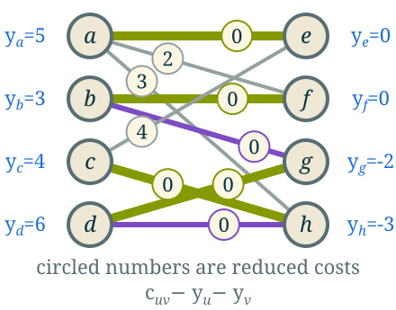
\[E^{=} = \{ae, bf, bg, ch, dg, dh\}\]
\[M = \{ae, bf, ch, dg\}\]
\[\begin{aligned} c(M) &= 5 + 3 + 1 + 4 = 13 \\ \sum_{w} y_w &= 13 \end{aligned}\]
The Primal-Dual Algorithm
Input: a bipartite graph $G = (V_1 \cup V_2, E)$ with nonnegative edge costs $c$ which has a perfect matching.
Initialize $y = 0$.
Start Round: Find the equality edges $E^=$ of the current $y.$ If there is a perfect matching $M$ amongst the edges of $E^=,$ terminate with $M,$ which has minimum cost.
If no perfect matching exists, then
- Find a deficient set $S$ (where we only look at equality edges), contained in $V_1$ or in $V_2.$
- Find every vertex that is joined by an equality edge to some vertex of $S,$ and call this set $\mathcal{N}_{E^=}(S).$
- Amongst all edges $uv \in E$ with $u \in S$ and $v \notin \mathcal{N}_{E^=}(S),$ find the smallest reduced cost $c_{uv} - y_u - y_v,$ and call it $t.$
- Add $t$ to $y_v$ for all vertices in $S,$ and subtract $t$ from $y_v$ for all vertices in $\mathcal{N}_{E^=}(S).$
Go back to the start of the round.
The Primal-Dual Algorithm
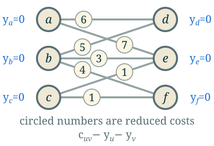
\[E^{=} = \emptyset\]
\[S = \{d\}, \quad \mathcal{N}_{E^=}(S) = \emptyset\]
\[t = \min\{6, 5\} = 5\]
The Primal-Dual Algorithm
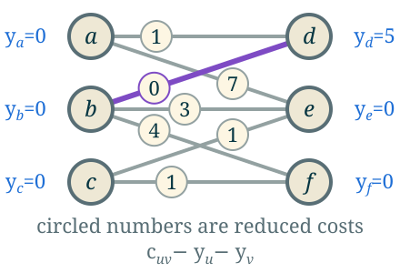
\[E^{=} = \{bd\}\]
\[S = \{e\}, \quad \mathcal{N}_{E^=}(S) = \emptyset\]
\[t = \min\{7, 3, 1\} = 1\]
The Primal-Dual Algorithm
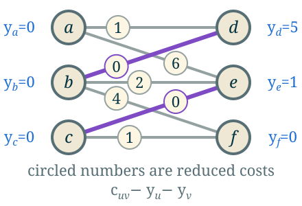
\[E^{=} = \{bd, ce\}\]
\[S = \{f\}, \quad \mathcal{N}_{E^=}(S) = \emptyset\]
\[t = \min\{4, 1\} = 1\]
The Primal-Dual Algorithm
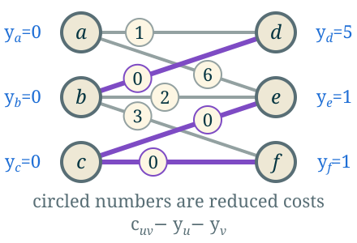
\[E^{=} = \{bd, ce, cf\}\]
\[S = \{a\}, \quad \mathcal{N}_{E^=}(S) = \emptyset\]
\[t = \min\{1, 6\} = 1\]
The Primal-Dual Algorithm
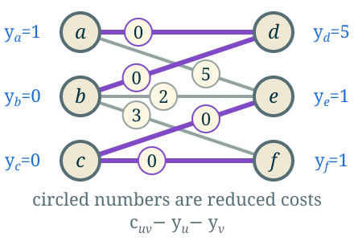
\[E^{=} = \{ad, bd, ce, cf\}\]
\[S = \{a, b\}, \quad \mathcal{N}_{E^=}(S) = \{d\}\]
\[t = \min\{5, 2, 3\} = 2\]
The Primal-Dual Algorithm

\[E^{=} = \{ad, bd, be, ce, cf\}\]
\[M = \{ad, be, cf\}\]
\[\begin{aligned} c(M) &= 6 + 3 + 1 = 10 \\ \sum_{w} y_w &= 10 \end{aligned}\]
The Primal-Dual Algorithm
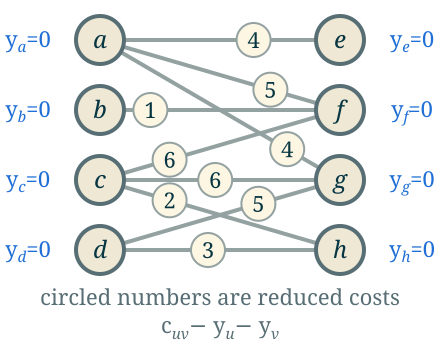
\[E^{=} = \emptyset\]
\[S = \{a\}, \quad \mathcal{N}_{E^=}(S) = \emptyset\]
\[t = \min\{4, 5, 4\} = 4\]
The Primal-Dual Algorithm
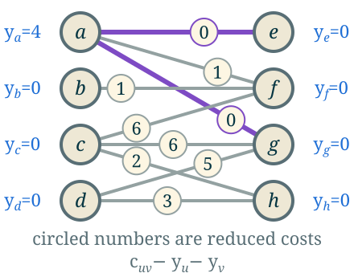
\[E^{=} = \{ae, ag\}\]
\[S = \{b\}, \quad \mathcal{N}_{E^=}(S) = \emptyset\]
\[t = \min\{1\} = 1\]
The Primal-Dual Algorithm
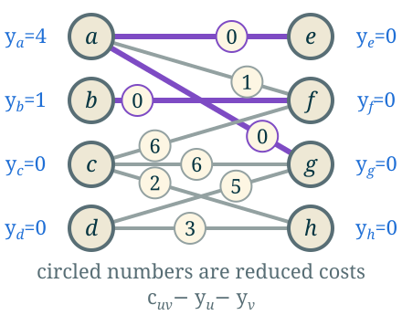
\[E^{=} = \{ae, ag, bf\}\]
\[S = \{c\}, \quad \mathcal{N}_{E^=}(S) = \emptyset\]
\[t = \min\{6, 6, 2\} = 2\]
The Primal-Dual Algorithm
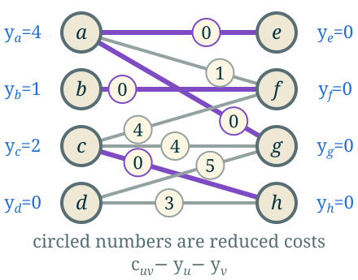
\[E^{=} = \{ae, ag, bf, ch\}\]
\[S = \{d\}, \quad \mathcal{N}_{E^=}(S) = \emptyset\]
\[t = \min\{5, 3\} = 3\]
The Primal-Dual Algorithm
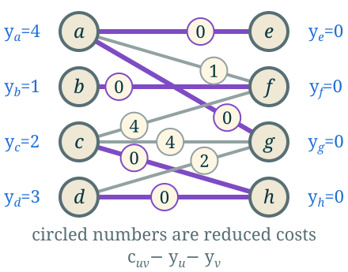
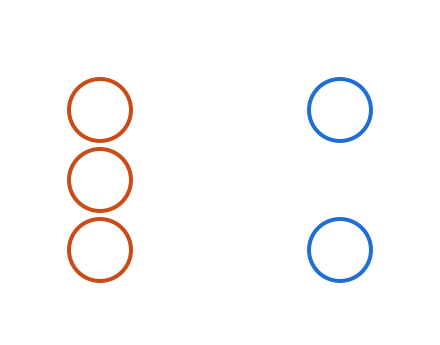
\[E^{=} = \{ae, ag, bf, ch, dh\}\]
\[S = \{b, c, d\}, \quad \mathcal{N}_{E^=}(S) = \{f, h\}\]
\[t = \min\{4, 2\} = 2\]
The Primal-Dual Algorithm
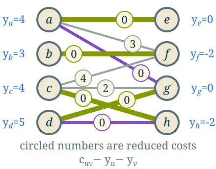
\[E^{=} = \{ae, ag, bf, ch, dg, dh\}\]
\[M = \{ae, bf, ch, dg\}\]
\[\begin{aligned} c(M) &= 4 + 1 + 2 + 5 = 12 \\ \sum_{w} y_w &= 12 \end{aligned}\]
Solving Integer Programs
Solving Integer Programs
We saw that the integer programming formulation of the perfect matching problem for bipartite graphs could be relaxed to the linear programming formulation with no loss.
Why don't we just directly tackle the integer program? Because integer programs are usually much harder than linear programs!
Solving Integer Programs
In general, an integer program looks like \[ \min \{c^{\intercal}x : Ax \le b, x \in \mathbb{Z}^n\}. \]
The linear programming relaxation is obtained by replacing the $\mathbb{Z}$ with $\mathbb{R}$.
Solving Integer Programs
We've been studying integer programs for a long time as a species. Archimedes (circa 250 BC) wrote the following poem:
The sun god had a herd of cattle consisting of bulls and cows, one part of which was white, a second black, a third spotted, and a fourth brown. Among the bulls, the number of white ones was one half plus one third the number of the black greater than the brown; the number of the black, one quarter plus one fifth the number of the spotted greater than the brown; the number of the spotted, one sixth and one seventh the number of the white greater than the brown. Among the cows, the number of white ones was one third plus one quarter of the total black cattle; the number of the black, one quarter plus one fifth the total of the spotted cattle; the number of spotted, one fifth plus one sixth the total of the brown cattle; the number of the brown, one sixth plus one seventh the total of the white cattle. What was the composition of the herd?
Why Are Integer Programs Hard?
Let $W, X, Y, Z$ be the numbers of white, black, spotted and brown bulls, and $w, x, y, z$ the corresponding cows. The first (linear) part asks for nonnegative integers satisfying:
Bulls:
\[ \begin{aligned} W &= \left(\tfrac12 + \tfrac13\right) X + Z \\ X &= \left(\tfrac14 + \tfrac15\right) Y + Z \\ Y &= \left(\tfrac16 + \tfrac17\right) W + Z \end{aligned} \]Cows:
\[ \begin{aligned} w &= \left(\tfrac13 + \tfrac14\right)(X + x) \\ x &= \left(\tfrac14 + \tfrac15\right)(Y + y) \\ y &= \left(\tfrac15 + \tfrac16\right)(Z + z) \\ z &= \left(\tfrac16 + \tfrac17\right)(W + w) \end{aligned} \]$W, X, Y, Z, w, x, y, z \in \Z_{\ge 0}$. $\;$ Seven equations, eight unknowns; we seek the smallest positive herd $W + X + Y + Z + w + x + y + z$.
The optimal value turns out to be 50389082.
Why Are Integer Programs Hard?
Is this integer program feasible?
\[ \begin{aligned} 31x_1 + 37x_2 + 41x_3 + 43x_4 + 47x_5 &= 200 \\ x &\ge 0 \\ x &\in \Z^5 \end{aligned} \]
Without $x \in \Z^5,$ this is an LP, and it is feasible:
\[x = \left(\frac{200}{31}, 0, 0, 0, 0\right)\]
The integer program is infeasible, but there is no obvious way to see this short of checking many cases.
Solving Integer Programs
Experience shows that solving integer programs is much harder than solving linear programs, but historically, it took quite a while to understand why mathematically.
Solving integer programs is still a large field of study.
Solving Integer Programs
Geometrically, integer points form a lattice (grey dots). The feasible set for an IP is the intersection between the lattice and a polytope.
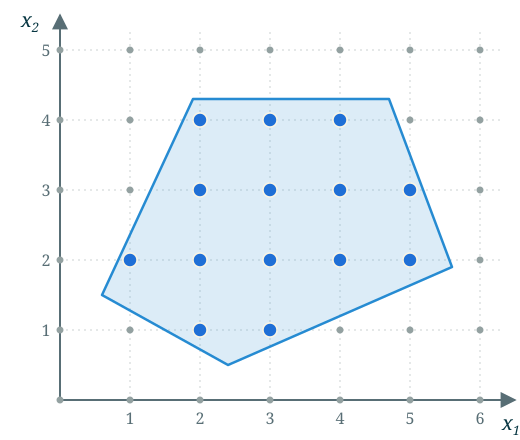
Solving Integer Programs
Even if the polytope is nonempty, there may be no integer points. This is one reason IPs are hard.
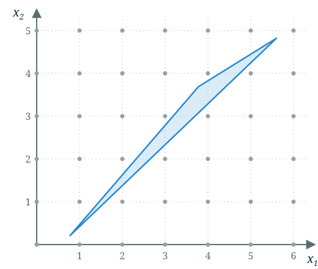
Observation: every feasible point for the IP is feasible for the LP relaxation. In particular, if the LP is infeasible, then the integer program is infeasible.
Solving Integer Programs
Let's say that we want to solve an integer linear program with $c$ being an integer vector.
\[\begin{aligned} \max \qquad & x_1 + x_2\\ \text{s.t.} \qquad & x_1 + 3x_2 \le 9\\ & 3x_1 + x_2 \le 17\\ & x_1, x_2 \ge 0\\ & x \in \Z^2. \end{aligned} \]
A first step may be to solve the linear programming relaxation.
Solving Integer Programs
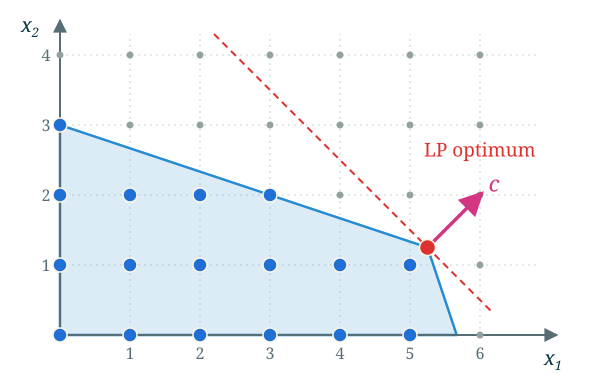
Solving Integer Programs
If we solve the linear program \[\begin{aligned} \max \qquad & x_1 + x_2\\ \text{s.t.} \qquad & x_1 + 3x_2 \le 9\\ & 3x_1 + x_2 \le 17\\ & x_1, x_2 \ge 0 \end{aligned} \] we get \[x_{LP} = \left(\tfrac{21}{4},\ \tfrac{5}{4}\right), \qquad v_{LP}^* = 6.5.\]
Clearly $x_{LP}$ is not an integer vector. Could there be any integer point that gets the objective value $6.5$?
No! Because the objective at any integer point would be an integer.
Solving Integer Programs
The linear programming relaxation teaches us that for any $x \in \R^2$ that satisfies the linear constraints, \[ x_1 + x_2 \le 6.5. \]
But if $x_1$ and $x_2$ are in addition integers, then $x_1+x_2$ must be an integer. This immediately means that any integer feasible point must have objective value at most 6.
Solving Integer Programs
The red line is valid for the blue polytope, but the green line is valid for the integer points in the polytope.
Solving Integer Programs
Looking at the integer program \[\begin{aligned} \max \qquad & x_1 + x_2\\ \text{s.t.} \qquad & x_1 + 3x_2 \le 9\\ & 3x_1 + x_2 \le 17\\ & x_1, x_2 \ge 0\\ & x_1, x_2 \in \mathbb{Z}, \end{aligned} \] we see that any integer feasible point must satisfy $x_1 + x_2 \le 6$.
Solving Integer Programs
So the following integer program has the same feasible points \[\begin{aligned} \max \qquad & x_1 + x_2\\ \text{s.t.} \qquad & x_1 + 3x_2 \le 9\\ & 3x_1 + x_2 \le 17\\ & x_1, x_2 \ge 0\\ & \color{red}{x_1 + x_2 \le 6}\\ & x_1, x_2 \in \mathbb{Z}. \end{aligned} \]
But its linear programming relaxation is a little better. We get a solution \[ x^*_{LP} = (\frac 92, \frac 32), v^*_{LP} = 6. \]
This is better, but it's still not an integer point. How can we make progress?
Solving Integer Programs
What if we choose some other objective, and see what happens when we optimize that? \[\begin{aligned} \max \qquad & c^{\intercal}x\\ \text{s.t.} \qquad & x_1 + 3x_2 \le 9\\ & 3x_1 + x_2 \le 17\\ & x_1, x_2 \ge 0\\ & \color{red}{x_1 + x_2 \le 6}\\ & x_1, x_2 \in \mathbb{Z}. \end{aligned} \]
We can follow the same process to get another valid inequality for the integer points.
Solving Integer Programs
Let's look at the linear program \[\begin{aligned} \max \qquad & x_1\\ \text{s.t.} \qquad & x_1 + 3x_2 \le 9\\ & 3x_1 + x_2 \le 17\\ & x_1, x_2 \ge 0\\ & \color{red}{x_1 + x_2 \le 6}\\ \end{aligned} \] which has optimal value $\frac{17}{3} \approx 5.7$.
What does this tell us about any integer solution to the linear program?
Well, any point satisfying just the linear inequalities must satisfy $x_1 \le 5.7$, but that means that any integer point would need to satisfy $x_1 \le 5$.
Solving Integer Programs
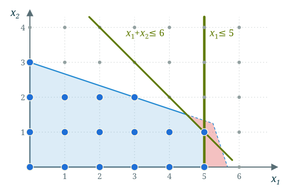
Solving Integer Programs
Overall, we have discovered that any feasible point to the integer program \[\begin{aligned} \max \qquad & x_1 + x_2\\ \text{s.t.} \qquad & x_1 + 3x_2 \le 9\\ & 3x_1 + x_2 \le 17\\ & x_1, x_2 \ge 0\\ & x_1, x_2 \in \mathbb{Z} \end{aligned} \] must satisfy the additional inequalities \[ \color{red}{ \begin{aligned} x_1 + x_2 &\le 6\\ x_1 & \le 5, \end{aligned} } \] which are not implied by just the linear constraints.
Solving Integer Programs
The following problem is therefore equivalent to the original one. \[\begin{aligned} \max \qquad & x_1 + x_2\\ \text{s.t.} \qquad & x_1 + 3x_2 \le 9\\ & 3x_1 + x_2 \le 17\\ & x_1, x_2 \ge 0\\ &\color{red}{x_1 + x_2 \le 6}\\ &\color{red}{x_1 \le 5}\\ & x_1, x_2 \in \mathbb{Z}. \end{aligned} \] Now $x^* = (5,1)$ is an optimal solution to the linear programming relaxation! So this is optimal for the integer program.
Solving Integer Programs
Let's say that we have an integer program \[ \begin{aligned} \max \qquad & c^{\intercal}x \\ \text{s.t.} \qquad & Ax \le b\\ & x \in \Z^n\\ \end{aligned} \] We say that a valid cutting plane for this integer program is an inequality \[ f^{\intercal}x \le v, \] which holds for any integer feasible point $x$.
Solving Integer Programs
We saw that if $f$ is an integer vector and we let $v^*$ be the optimal value of the linear program \[ \begin{aligned} \max \qquad & f^{\intercal}x \\ \text{s.t.} \qquad & Ax \le b, \end{aligned} \] then $f^{\intercal}x \le \lfloor v^* \rfloor$ is a valid cutting plane for the integer program. Here, $\lfloor v \rfloor$ is the floor function; the largest integer which is at most $v$.
Solving Integer Programs
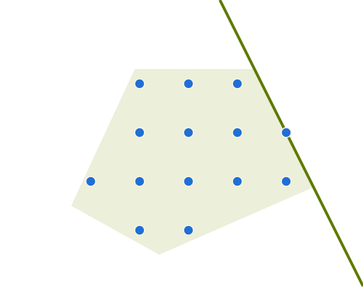
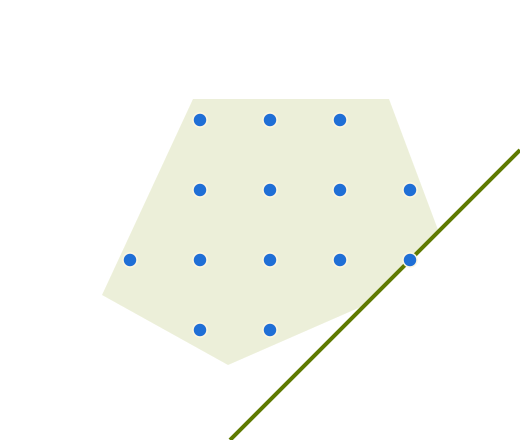
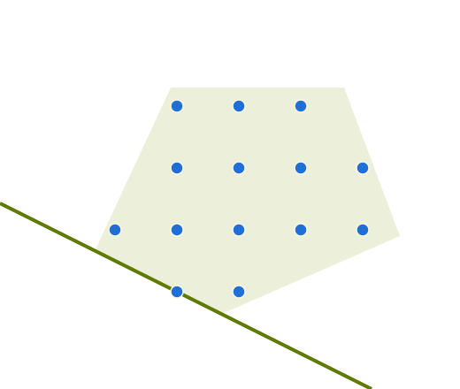
= 4, drawn as a green line touching one integer point. The line runs across the whole picture, and the part of the polygon on its valid side is shaded in translucent green." />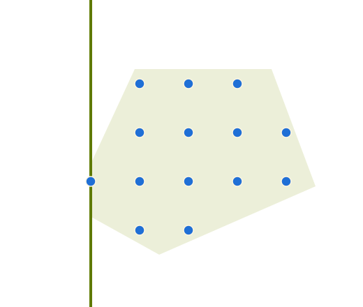
= 1, drawn as a green line touching one integer point. The line runs across the whole picture, and the part of the polygon on its valid side is shaded in translucent green." />Solving Integer Programs
This brings us to the notion of the convex hull of a set. Let $C = \{x \in \Z^n : Ax \le b\}$. We define the convex hull to be \[ \conv(C) = \{x \in \R^n : f^{\intercal}x \le v \text{ for every cutting plane}\}. \]
Solving Integer Programs
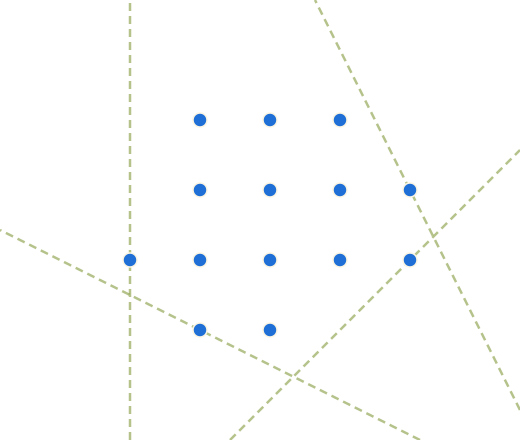
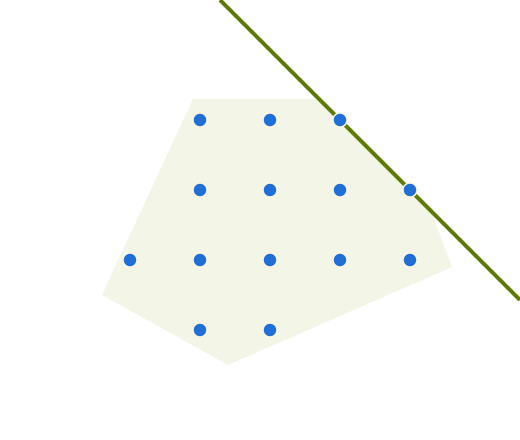
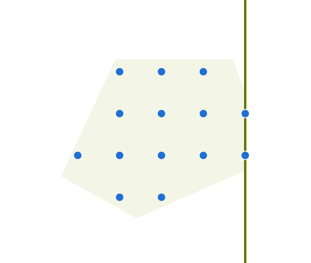
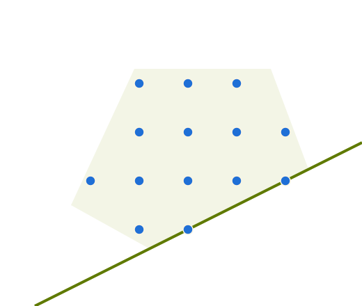
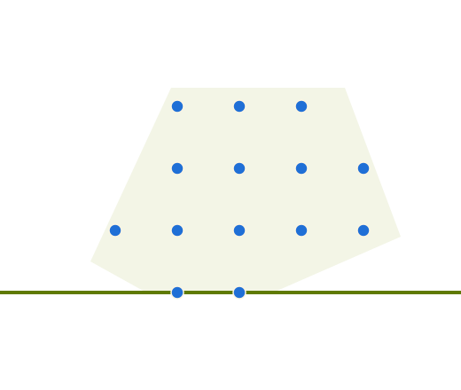
= 1, drawn as a green line across the whole picture through two or more of the integer points. The part of the polygon on its valid side is shaded in translucent green." /> = 3, drawn as a green line across the whole picture through two or more of the integer points. The part of the polygon on its valid side is shaded in translucent green." /> = 0, drawn as a green line across the whole picture through two or more of the integer points. The part of the polygon on its valid side is shaded in translucent green." />
Solving Integer Programs
The convex hull has many amazing properties. We'll state some without proof.
Convex Hull Fact 1
The convex hull is the smallest convex set containing $C$. That is, \[ \conv(C) = \bigcap_{\substack{C \subseteq S\\ S\text{ convex}}}S. \]
This follows from the separating hyperplane theorem.
Solving Integer Programs
The convex hull has many amazing properties. We'll state some without proof.
Convex Hull Fact 2
For any $c \in \R^n$, \[ \max \{c^{\intercal}x : x \in \conv(C)\} = \max \{c^{\intercal}x : x \in C\}. \]
This actually follows from the definition of the convex hull.
Solving Integer Programs
The convex hull has many amazing properties. We'll state some without proof.
Convex Hull Fact 3
If $C = \{x \in \Z^n : Ax \le b\}$, then $\conv(C)$ is a polytope.
This is saying that finitely many linear inequalities suffice to define $\conv(C)$.
Solving Integer Programs
In total, the above facts say that any integer linear program can be solved by solving some linear program whose objective is the same as that of the integer linear program.
But the number of constraints for that linear program may be extremely large! There are systematic ways of finding the linear program (Chvátal–Gomory cuts).
In practice, we will just start by adding in cutting planes one at a time, and seeing if they improve the solution.